A complete, ground-up rebuild of the xQuesty Admin Dashboard as an isolated, MVC-structured module on both the backend (FastAPI) and frontend (React + Vite), adapted strictly to the existing database — no schema changes.
| Area | Before (legacy) | After (this sprint) |
|---|---|---|
| Backend | One 375-line admin/router.py with all logic inline |
MVC module: repositories → services → routers, schemas, permissions, validators, tests |
| Frontend | 4 basic pages (src/app/admin/*) + ad-hoc components |
Isolated module src/admin/*: pages, layout, components, services, hooks, context |
| Dashboard | 4 stat cards | KPI cards, charts, activity feed, quick actions, status indicators |
| Users | Separate Candidates + Recruiters tables, delete-only | One unified Users table (search, filter, view, edit, disable, delete) with a large detail drawer + 3-dot actions |
| Companies | — (did not exist) | Company management derived from hr_profiles |
| Jobs | — | Full job_pools management (search, filter, edit, activate/archive, delete) |
| Applications | — | interview_sessions as applications: progress, status, transcript, AI summary |
| Reports | — | Analytics + CSV/Excel export |
| Settings | Sidebar links | Profile-dropdown → Settings (My Profile, Admin Users, Security, API Keys placeholder) |
See screenshots/. Captured from the live app with Playwright
(capture_screens.py), driving real data from the production Supabase instance.
# 1. Run the app (root of repo)
runall.bat
# 2. From backend/ (venv active), run the unit tests
python -m pytest app/admin/tests -q
# 3. Drive the live UI: verify pages + capture screenshots
python ../docs/sprints/sprint-admin-dashboard/verify_and_screenshot.py
python ../docs/sprints/sprint-admin-dashboard/capture_screens.py
# 4. Regenerate the PDF
python ../docs/sprints/sprint-admin-dashboard/build_pdf.py
admin_profiles, candidate_profiles, hr_profiles,
job_pools, interview_sessions, Candidate_summaries.app.auth.verify_token
(Supabase JWT). The module only adds the admin-role gate on top.backend/app/admin/ and frontend/src/admin/.The Admin Dashboard is two cooperating MVC modules — one in the FastAPI backend,
one in the React frontend — talking over a JSON HTTP API under /api/v1/admin.
┌──────────────────────────── Browser ────────────────────────────┐
│ React + Vite SPA (frontend/src/admin) │
│ │
│ Pages (View) ──uses──▶ Hooks/Context ──calls──▶ Services │
│ │ │ │
│ └──────────────── render UI ◀──────────────────────┘ │
│ │ │
└──────────────────────────────────────────────────────── │ ──────┘
│ fetch (Bearer JWT)
▼
┌──────────────────────────── FastAPI ────────────────────────────┐
│ Admin module (backend/app/admin) │
│ │
│ Routers (View) ─▶ Services (Controller) ─▶ Repositories (Model)│
│ │ │ │ │
│ permissions.py validators.py Supabase client │
│ (admin gate) (input rules) │ │
└───────────────────────────────────────────────────── │ ─────────┘
▼
┌──────── Supabase ───────┐
│ Postgres (6 tables) │
│ + GoTrue Auth │
└─────────────────────────┘
| Layer | Folder | Responsibility | May import |
|---|---|---|---|
| View | routers/ |
Parse the HTTP request, enforce the admin dependency, call one service method, serialise the response. No business logic. | services, schemas, permissions |
| Controller | services/ |
Business rules: orchestrate repositories, validate, shape data, enforce invariants (e.g. "can't delete the last admin"). Raise HTTPException on domain errors. |
repositories, schemas, validators |
| Model | repositories/ |
The only code that touches the database. One class per table (plus AuthRepository for GoTrue). Returns plain dicts/lists. |
the Supabase client |
| Cross-cutting | permissions.py, validators.py, schemas/ |
Auth dependency, reusable validators, request/response contracts. | — |
The dependency rule points one way: routers → services → repositories. A repository never imports a service; a router never imports a repository. This is what keeps the layers swappable and testable.
| Layer | Folder | Responsibility |
|---|---|---|
| View | pages/, components/ |
Render UI, handle local interaction state. |
| Controller | hooks/, context/ |
useAsync (loading/error/data), useDebounce, useConfirm, useToast; AdminAuthContext (session). |
| Model | services/, types.ts |
API access via the http client; typed contracts. |
The client.ts http wrapper is the single choke-point for every request: it
injects the bearer token, normalises FastAPI error shapes, and flags auth errors.
UsersPage mounts and calls useAsync(() => usersService.listUsers(...)).usersService.listUsers calls http.get('/api/v1/admin/users?...'), which
attaches Authorization: Bearer <admin_token>.users_router.list_users, whose Depends(get_current_admin)
runs permissions.get_current_admin → app.auth.verify_token (validates
the Supabase JWT) → AdminRepository.get(user_id) (is this user an admin?).UserService().list_users(...).UserService merges CandidateRepository.list_all() + HrRepository.list_all(),
overlays disabled status from AuthRepository.disabled_map(), filters/sorts,
and returns normalised rows.useAsync flips to {loading:false, data}; the
table renders.localStorage under admin_token, verified server-side by
app.auth.verify_token (a call to Supabase /auth/v1/user).permissions.get_current_admin looks the
authenticated user up in admin_profiles; absence ⇒ 403.AuthService.login) signs in via Supabase, then confirms the user is
in admin_profiles before returning the token.The profile tables have no status/disabled column, and the schema is frozen.
So disable = ban the user in Supabase Auth (AuthRepository.ban_user sets a
~100-year ban_duration via the GoTrue admin API); enable removes the ban. The
Users list reads ban state in one paged sweep (AuthRepository.disabled_map) so
the disabled badge is accurate without an auth call per row.
| Screen | Primary table(s) | Notes |
|---|---|---|
| Dashboard | all six | counts + 6-month growth + status breakdowns + activity |
| Users | candidate_profiles + hr_profiles |
unified; admins excluded |
| Companies | hr_profiles |
aggregated by company_name (no companies table) |
| Jobs | job_pools (join hr_profiles) |
management actions on existing columns |
| Applications | interview_sessions (+ candidate_profiles, job_pools, Candidate_summaries) |
rows grouped by session_id into applications |
| Reports | all six | analytics + CSV/XLSX export built in-memory |
| Settings → Admin Users | admin_profiles |
the only admin-management surface |
See database-mapping.md for the column-level detail.
A precise map of which file plays which role, so a junior developer always knows where a given kind of change belongs.
Where do I put this code? - Reads/writes the database → a repository (Model). - A business decision, a rule, combining data → a service (Controller). - Wiring an HTTP request to a service call → a router (View, backend). - Rendering pixels / handling clicks → a page or component (View, frontend). - Fetching from the API → a service (frontend Model). - Shared async/UI behaviour → a hook or context (frontend Controller).
| MVC role | Files | What lives here | What must NOT live here |
|---|---|---|---|
| Model | repositories/*.py |
.table(...).select/insert/update/delete, GoTrue admin calls |
business rules, HTTP, validation |
| Controller | services/*.py |
grouping rows into applications, computing KPIs, "can't delete last admin", disable-via-ban, building CSV/XLSX | raw SQL/PostgREST (delegate to repos), HTTP routing |
| View | routers/*.py |
APIRouter, path/query parsing, Depends(get_current_admin), one service call, response model |
loops over data, conditionals on domain state, DB access |
| Auth (cross-cut) | permissions.py |
the admin dependency | token verification (reused from app.auth) |
| Validation (cross-cut) | validators.py |
validate_user_type, validate_dataset, validate_format |
DB access |
| Contracts | schemas/*.py |
pydantic in/out models | logic |
POST /api/v1/admin/users/candidate/{id}/disable
│
routers/users_router.py disable_user() ← VIEW: parse path, check admin, call service
│
services/user_service.py set_disabled(...) ← CONTROLLER: verify the user exists, decide ban vs unban
│
repositories/auth_repository.py ban_user(id) ← MODEL: PUT ban_duration to GoTrue
| MVC role | Files | What lives here |
|---|---|---|
| Model | services/*.ts, types.ts, services/client.ts |
API calls, token handling, typed shapes |
| Controller | hooks/*.ts, context/AdminAuthContext.tsx |
useAsync, useDebounce, useConfirm, useToast, session state |
| View | pages/*.tsx, components/** |
layout, tables, drawers, forms, charts |
pages/UsersPage.tsx ← VIEW: renders table, search, filter, actions
│ uses
hooks/useAsync.ts + hooks/useDebounce.ts ← CONTROLLER: fetch lifecycle + debounced search
│ calls
services/users.service.ts ← MODEL: GET /api/v1/admin/users
│ via
services/client.ts (http.get) ← MODEL: token + error handling
The detail drawer (components/users/UserDetailDrawer.tsx) is also a View; it
calls users.service.ts directly for the single-record fetch and the update.
The optimization pass added a thin cross-cutting performance layer that does not change the MVC roles — it sits beside them:
| Concern | File | Layer it serves |
|---|---|---|
| Local JWT verification + cached admin lookup | security.py |
in front of the auth dependency (Model access avoided) |
| TTL cache primitive + memoize decorator | cache.py |
used by Controllers (services) and the Model (auth_repository) |
| Shared DB client | repositories/base.py |
Model |
| Aggregate memoization | dashboard/application/report services |
Controller |
| Request cache + de-dupe | services/cache.ts, hooks/useQuery.ts |
frontend Model/Controller |
Rule of thumb unchanged: caching is an implementation detail inside a layer
(e.g. a service memoizes its own aggregate), never a new place for business
rules. Mutations invalidate the caches they affect (e.g. ban/unban clears the
disabled-map cache; user writes invalidate the frontend users:/dashboard:
cache keys).
tests/test_application_service.py, test_company_and_report.py) — no DB.
Routers are tested with TestClient and an overridden admin dependency.dashboard_service
changes. Routers and the frontend stay put.dashboard_service. A
404 on an endpoint → the matching routers/*.py. A wrong column →
the matching repositories/*.py.backend/app/admin/admin/
├── __init__.py # exports `router` (the aggregated APIRouter)
├── router.py # mounts all sub-routers under /api/v1/admin
├── permissions.py # get_current_admin dependency (admin gate)
├── validators.py # reusable input validators
│
├── repositories/ # MODEL — database access only
│ ├── __init__.py
│ ├── base.py # BaseRepository: shared Supabase client
│ ├── admin_repository.py # admin_profiles
│ ├── candidate_repository.py # candidate_profiles
│ ├── hr_repository.py # hr_profiles
│ ├── job_pool_repository.py # job_pools
│ ├── interview_repository.py # interview_sessions
│ ├── summary_repository.py # Candidate_summaries
│ └── auth_repository.py # Supabase Auth admin API (create/ban/delete)
│
├── services/ # CONTROLLER — business rules
│ ├── __init__.py
│ ├── auth_service.py
│ ├── dashboard_service.py
│ ├── user_service.py
│ ├── company_service.py
│ ├── job_service.py
│ ├── application_service.py
│ ├── report_service.py
│ └── settings_service.py
│
├── routers/ # VIEW — thin HTTP endpoints
│ ├── __init__.py
│ ├── auth_router.py # /login /register /me /logout /health
│ ├── dashboard_router.py # /dashboard/{stats,charts,activity}
│ ├── users_router.py # /users ...
│ ├── companies_router.py # /companies ...
│ ├── jobs_router.py # /jobs ...
│ ├── applications_router.py# /applications ...
│ ├── reports_router.py # /reports/{summary,export}
│ └── settings_router.py # /settings/{admins,profile,security,api-keys}
│
├── schemas/ # pydantic request/response contracts
│ ├── __init__.py
│ ├── common.py
│ ├── auth_schemas.py
│ ├── dashboard_schemas.py
│ ├── user_schemas.py
│ ├── company_schemas.py
│ ├── job_schemas.py
│ └── settings_schemas.py
│
└── tests/ # fast unit tests (no live DB)
├── __init__.py
├── conftest.py # stubs the Supabase client
├── test_validators.py
├── test_application_service.py
├── test_company_and_report.py
└── test_routers.py # TestClient wiring smoke tests
frontend/src/admin/admin/
├── AdminApp.tsx # module entry: providers + route table (mounted at /admin/*)
├── types.ts # shared TypeScript contracts
│
├── context/
│ └── AdminAuthContext.tsx # current admin + login/logout/refresh
│
├── hooks/
│ ├── useAsync.ts # generic loading/error/data fetcher
│ ├── useDebounce.ts # debounce search inputs
│ └── useToast.ts # toast helper (react-hot-toast)
│
├── services/ # MODEL — typed API access
│ ├── client.ts # http wrapper (token, errors, download)
│ ├── auth.service.ts
│ ├── dashboard.service.ts
│ ├── users.service.ts
│ ├── companies.service.ts
│ ├── jobs.service.ts
│ ├── applications.service.ts
│ ├── reports.service.ts
│ └── settings.service.ts
│
├── lib/
│ └── format.ts # date / value formatting helpers
│
├── components/
│ ├── ui/ # design-system primitives
│ │ ├── Button.tsx form.tsx primitives.tsx SearchInput.tsx
│ │ ├── Drawer.tsx Modal.tsx ActionsMenu.tsx ConfirmDialog.tsx
│ │ ├── KpiCard.tsx Table.tsx Tabs.tsx index.ts (barrel)
│ ├── charts/
│ │ └── Charts.tsx # recharts wrappers (area, donut, bar)
│ ├── layout/
│ │ ├── AdminLayout.tsx Sidebar.tsx Topbar.tsx RequireAdmin.tsx
│ ├── users/
│ │ ├── CreateUserModal.tsx UserDetailDrawer.tsx
│ ├── companies/CompanyDetailDrawer.tsx
│ ├── jobs/JobDetailDrawer.tsx
│ └── applications/ApplicationDetailDrawer.tsx
│
└── pages/ # VIEW — one per route
├── LoginPage.tsx
├── DashboardPage.tsx
├── UsersPage.tsx
├── CompaniesPage.tsx
├── JobsPage.tsx
├── ApplicationsPage.tsx
├── ReportsPage.tsx
└── SettingsPage.tsx
backend/app/main.py does from app.admin import router as admin_module
then app.include_router(admin_module). One line; nothing else in the app
references admin internals.frontend/src/App.tsx mounts the module with a single splat route:
<Route path="/admin/*" element={<AdminApp />} />. AdminApp owns everything
below /admin.The admin module adapts to the existing schema. Nothing here was created, altered or dropped. Columns below were introspected live from the Supabase PostgREST OpenAPI definition (the source of truth), not from migration files (which were out of date).
admin_profiles| Column | Type | Notes |
|---|---|---|
id |
uuid | PK → auth.users.id |
full_name |
text | |
email |
text | |
created_at |
timestamptz | |
password |
text | legacy/unused for auth (auth is via Supabase) — never returned to the client |
Used by: AdminRepository, AuthService, SettingsService, permissions.get_current_admin.
candidate_profiles| Column | Type | Column | Type | |
|---|---|---|---|---|
id |
uuid (PK) | city |
text | |
full_name |
text | education_level |
text | |
email |
text | university_name |
text | |
phone |
text | field_of_study |
text | |
created_at |
timestamptz | languages |
text[] | |
title |
text | expected_salary_min |
numeric | |
phone_number |
text | expected_salary_max |
numeric | |
linkedin_url |
text | profile_picture_url |
text | |
current_job_title |
text | open_to_work |
boolean | |
current_company |
text | years_of_experience |
integer |
Used by: CandidateRepository; surfaced in Users (type=candidate) and the user detail drawer.
hr_profiles (recruiters + company data)| Column | Type | Column | Type | |
|---|---|---|---|---|
id |
uuid (PK) | company_industry |
text | |
full_name |
text | company_size |
text | |
email |
text | company_website |
text | |
phone |
text | company_linkedin_url |
text | |
created_at |
timestamptz | company_email |
text | |
company_name |
text | company_phone |
text | |
company_description |
text | company_address |
text | |
company_founded_year |
integer |
Used by: HrRepository; surfaced in Users (type=recruiter) and derived into Companies.
job_pools| Column | Type | Column | Type | |
|---|---|---|---|---|
id |
uuid (PK) | must_have_skills |
text[] | |
hr_id |
uuid → hr_profiles.id | nice_to_have_skills |
text[] | |
title |
text | soft_skills |
text[] | |
description |
text | deal_breakers |
text[] | |
public_token |
text | responsibilities |
text[] | |
status |
boolean | languages |
text[] | |
created_at |
timestamptz | years_experience |
smallint | |
seniority_level |
text | education_level |
text | |
main_mission |
text | contract_type |
text | |
experience_range |
text | location |
text | |
generated_jd |
text | archived |
boolean | |
notes |
text | gemini_store_name |
varchar |
Used by: JobPoolRepository; surfaced in Jobs, Companies (job counts) and Applications (pool title).
interview_sessions (= applications)| Column | Type | Notes |
|---|---|---|
id |
integer (PK) | one row per question |
candidate_id |
uuid → candidate_profiles.id | |
name |
varchar | candidate name snapshot |
question |
text | |
answer |
text | nullable until answered |
sequence |
integer | question order |
timestamp |
timestamp | |
session_status |
varchar | active / completed |
phone |
text | |
openai_session_id |
text | |
session_id |
uuid | groups rows into one application |
pool_id |
text | the job pool being applied to |
Used by: InterviewRepository; rows are grouped by session_id in
ApplicationService into one "application" with progress + status.
Candidate_summaries (note the capital C)| Column | Type | Notes |
|---|---|---|
id |
uuid (PK) | |
candidate_id |
uuid → candidate_profiles.id | |
Candidate_name |
text | mixed-case column, quoted exactly |
summary |
text | AI-generated interview summary |
last_updated |
timestamptz | |
phone |
text | |
score |
text | AI score |
Used by: SummaryRepository; shown in the Application detail drawer ("AI summary").
auth.users ──1:1── admin_profiles / candidate_profiles / hr_profiles (id = auth user id)
hr_profiles ──1:N── job_pools (job_pools.hr_id → hr_profiles.id)
candidate_profiles ──1:N── interview_sessions (interview_sessions.candidate_id)
candidate_profiles ──1:N── Candidate_summaries (Candidate_summaries.candidate_id)
job_pools ◀┄┄ interview_sessions.pool_id (text id, joined in app code)
hr_profiles.company_name ──derives──▶ "Company" (no companies table)
| Screen | reads | writes |
|---|---|---|
| Dashboard | all six (counts/aggregates) | — |
| Users (list) | candidate_profiles, hr_profiles (+ GoTrue ban state) | — |
| Users (create) | — | candidate_profiles / hr_profiles + GoTrue user |
| Users (edit) | candidate_profiles / hr_profiles | same |
| Users (disable) | — | GoTrue ban (no table column) |
| Users (delete) | — | candidate_profiles / hr_profiles + GoTrue user |
| Companies | hr_profiles, job_pools | hr_profiles (company_* fan-out) |
| Jobs | job_pools (join hr_profiles) | job_pools |
| Applications | interview_sessions, candidate_profiles, job_pools, Candidate_summaries | — |
| Reports | all six | — (export only) |
| Settings → Admin Users | admin_profiles | admin_profiles + GoTrue user |
| Settings → Security | — | GoTrue password |
The rebuild was executed in seven phases. Each phase was verified before moving on.
Candidate_summaries (which was absent from code).recharts.openpyxl (Excel export), playwright (+ chromium) for docs.pytest for the module's tests. Recorded all in requirements.txt.Built bottom-up so each layer could be verified against the one below:
AuthRepository for GoTrue.router.py.Verified: module imports (34 routes), unit tests pass, and a live read-only smoke test of every service against real Supabase data.
types.ts, client.ts, AdminAuthContext, hooks.App.tsx: replaced four admin routes with <Route path="/admin/*">.src/app/admin/, src/components/admin/, src/lib/adminAuth.ts.main.py: include the new aggregated router. The legacy monolithic
router was replaced in place. See cleanup-report.md.runall.bat pattern).admin-dashboard.pdf from a self-contained HTML build (Playwright
print-to-PDF) that embeds the docs and screenshots.app.auth (no auth rewrite).backend/app/admin/ and frontend/src/admin/.Three layers of assurance: backend unit tests, a live read-only service smoke test, and an end-to-end UI verification with Playwright.
backend/app/admin/tests/Fast, no live database (the Supabase client is stubbed in conftest.py). Run:
cd backend
python -m pytest app/admin/tests -q
Result: 23 passed.
| File | Covers |
|---|---|
test_validators.py |
validate_user_type (rejects admin), validate_dataset, validate_format, require_non_empty |
test_application_service.py |
grouping interview rows into applications, progress counting, completed-status detection, status filtering, detail assembly |
test_company_and_report.py |
company aggregation by name, first-non-null company fields, search filter; CSV header/rows, bool/list cell rendering, valid XLSX (PK zip magic) |
test_routers.py |
router wiring via TestClient with an overridden admin dependency: /health, /dashboard/stats, /users, and a 400 on a bad export dataset |
How services are tested without a DB: each test builds the service, then
replaces its repository attributes with SimpleNamespace fakes returning canned
rows. This exercises the business rules in isolation — the essence of the MVC
split.
Before building the frontend, every service was run against the real Supabase
data to validate the schema assumptions (table casing, joins, the
Candidate_summaries table, GoTrue ban reads). All passed, e.g.:
dashboard.stats = recruiters:19 candidates:34 pools:9 companies:13
applications:14 completed:7 summaries:1
users.list = 53 companies.list = 13 jobs.list = 9 applications.list = 14
reports.csv(users) -> bytes reports.xlsx(candidates) -> bytes
verify_and_screenshot.py drives the live app and asserts each page renders,
while capturing all console output.
Checks (all functional areas pass):
Console health: only 2 messages, both benign React-Router future-flag
warnings (v7_startTransition, v7_relativeSplatPath).
Zero React duplicate-key warnings — every list uses a stable rowKey
(e.g. ${type}:${id} for the unified Users table).
Note: when the verification script sweeps all pages in a few seconds it can hit Supabase Auth's per-request token-verification rate limit (every backend call re-verifies the JWT against GoTrue). That manifests as transient timeouts in the script, not as product bugs — under normal single-user interaction it does not occur, and a brief cooldown + client-side navigation makes the run clean. This is why
capture_screens.pywaits for rendered content and paces itself.
capture_screens.py produces the documentation screenshots in screenshots/,
waiting for charts/tables to actually render before each capture so no image
shows a loading state.
What legacy Admin Dashboard code was removed and what replaced it. The success criterion "Old Admin Dashboard is removed" is satisfied.
| Path | What it was | Replaced by |
|---|---|---|
src/app/admin/page.tsx |
Legacy dashboard (4 stat cards) | src/admin/pages/DashboardPage.tsx |
src/app/admin/login/page.tsx |
Legacy login | src/admin/pages/LoginPage.tsx |
src/app/admin/candidates/page.tsx |
Candidates table | src/admin/pages/UsersPage.tsx (unified) |
src/app/admin/recruiters/page.tsx |
Recruiters table | src/admin/pages/UsersPage.tsx (unified) |
src/app/admin/layout.tsx |
Sidebar layout wrapper | src/admin/components/layout/AdminLayout.tsx |
src/components/admin/AdminSidebar.tsx |
Sidebar | src/admin/components/layout/Sidebar.tsx |
src/components/admin/RequireAdmin.tsx |
Route guard | src/admin/components/layout/RequireAdmin.tsx |
src/components/admin/CreateUserModal.tsx |
Create modal | src/admin/components/users/CreateUserModal.tsx |
src/components/admin/UserTable.tsx |
Table | src/admin/components/ui/Table.tsx (generic) |
src/lib/adminAuth.ts |
Admin auth helpers | src/admin/services/auth.service.ts + client.ts + context/AdminAuthContext.tsx |
Whole directories removed: src/app/admin/, src/components/admin/.
| Path | Change |
|---|---|
src/App.tsx |
Removed 4 admin page imports + the AdminLayout import and the four /admin/* routes; added import AdminApp and a single <Route path="/admin/*" element={<AdminApp />} />. |
| Path | Change |
|---|---|
app/admin/router.py |
The legacy 375-line monolith (all endpoints + business logic inline) was replaced by a thin aggregator that mounts the new sub-routers. |
app/admin/__init__.py |
Now documents the MVC module and exports the aggregated router. |
app/main.py |
include_router(admin_module) for the new module; CORS comment updated from "Next.js" to "Vite". |
repositories/ (7 + base), services/ (8), routers/ (8), schemas/ (7),
permissions.py, validators.py, tests/ (5). See FILES.md.
app/schemas.py still contains legacy Admin* pydantic models. They are no
longer used by the admin module (which has its own schemas/), but other code
and historical compatibility are unaffected by leaving them. Removing them was
out of scope and carried needless risk.app/auth.py — reused as-is (verify_token, get_supabase, parse_datetime).
Not modified: this was explicitly not an auth rewrite.DATABASE_URL / SQLAlchemy dependency — unused by admin; left as-is.A repo-wide search for app/admin, components/admin and lib/adminAuth before
deletion showed the only external importer was App.tsx (updated). All other
references were the legacy files importing each other. No other module imported
the deleted frontend code.
A dedicated performance pass. No new features, no UI redesign, no schema changes. This document records the audit (measurements, slow endpoints, root causes, opportunities). The fixes and before/after results are in SPRINT_REPORT.md.
scratchpad/bench.py, then a clean re-measure via bench_clean.py).GET /auth/v1/user call — exactly what the old code did on every request.nav_timing.py).Measurement note (important for reproducibility). On Windows,
localhostresolves to IPv6::1first while the dev server binds IPv4, which adds a uniform ~2000 ms connect penalty to some HTTP clients (Pythonurllib). All clean server-latency numbers here usehttp://127.0.0.1:8000to avoid that client-side artifact. The original "feels slow" symptom is independent of this and is caused by the root cause below.
Measured end-to-end while the dashboard was in normal use. Latencies were not just high but wildly variable, the signature of rate-limiting:
| Endpoint | avg ms | peak ms | payload |
|---|---|---|---|
/me (no data work!) |
3138 | 16432 | 0.1 KB |
/dashboard/stats |
8275 | 12164 | 0.1 KB |
/dashboard/charts |
7635 | 11863 | 0.7 KB |
/dashboard/activity |
5486 | 9224 | 1.5 KB |
| dashboard page (3 calls) | 27545 | — | — |
/users |
5134 | 8002 | 11.8 KB |
/companies |
4393 | 5463 | 6.3 KB |
/jobs |
3804 | — | 7.3 KB |
/applications |
14526 | 41724 | 4.5 KB |
/reports/summary |
16950 | 24411 | 3.0 KB |
The tell-tale sign: /me does no data work — it only verifies the token and
returns the admin's profile — yet it took 3+ seconds. The cost was pure auth
overhead.
app/auth.py::verify_token verified the caller's JWT by calling Supabase GoTrue
over the network on every request:
resp = httpx.get(f"{SUPABASE_URL}/auth/v1/user", headers={...}) # blocking, per request
async dependency → it also blocks the
event loop, serialising concurrent requests.admin_profiles query) per
request.DashboardService.stats(), .charts() and .activity() each independently
re-fetched overlapping full tables (candidates, recruiters, pools) and each
called ApplicationService.list_applications() — which scans all
interview_sessions + candidates + pools — just to compute counts.ReportService.summary() recomputed the same application + company aggregates
again.UserService.list_users called AuthRepository.disabled_map() on every request,
which pages through every Supabase Auth user to know who is banned — another
network-heavy operation repeated on each list/search keystroke.
BaseRepository.__init__ created a fresh client (with its own httpx pool) for
every repository instance. A single service builds several repositories → several
clients per request.
select("*"), pulling columns the table view never shows
(e.g. the Users list dragged ~11.8 KB including profile-picture URLs, salary,
etc.).useAsync, which refetched on each mount → revisiting a page
always showed a spinner and hit the network again.| # | Opportunity | Fix |
|---|---|---|
| 1 | Kill per-request GoTrue call | Local JWKS (ES256) verification, cached; network fallback retained |
| 2 | Stop re-verifying the admin row | Cache admin_profiles lookup (60 s TTL) |
| 3 | Stop re-scanning tables 3× per dashboard | TTL-cache aggregates (stats/charts/activity 15 s, applications 15 s, reports 20 s) |
| 4 | Stop the GoTrue ban sweep per Users load | Cache disabled_map (30 s, invalidated on ban/unban) |
| 5 | Stop creating clients per repo | One shared service-role client |
| 6 | Stop over-fetching | list_basic column projection for the Users list |
| 7 | Bound payloads / rendering | Server-side pagination on Users; client-side pagination on other tables |
| 8 | Instant navigation | Frontend SWR cache + request de-dupe |
| 9 | No "Loading…" | Skeleton table + chart skeletons |
| 10 | Fewer re-renders | useMemo columns/handlers |
| 11 | Smaller initial bundle | Lazy-loaded routes |
See SPRINT_REPORT.md for the before/after benchmarks and improvement percentages.
Goal: make the Admin Dashboard feel instant. No new features, no UI redesign, no schema changes. See PERFORMANCE_AUDIT.md for the audit and root-cause analysis.
Root cause: every API request verified the JWT by calling Supabase GoTrue over the network (~376 ms each, blocking), then queried
admin_profilesagain — and the volume tripped GoTrue's rate limiter, ballooning latency to 3–42 seconds. Replacing it with local JWKS verification + caching removed that cost entirely.
"Before" = measured under the rate-limited condition that caused the complaint.
"After" = clean warm server latency (127.0.0.1, cache warm). Improvement is the
reduction in response time.
| Endpoint | Before (avg) | After (warm) | Reduction | Speedup |
|---|---|---|---|---|
/me (auth only) |
3138 ms | 14 ms | 99.6% | 224× |
/dashboard/stats |
8275 ms | 13 ms | 99.8% | 636× |
/dashboard/charts |
7635 ms | 15 ms | 99.8% | 509× |
/dashboard/activity |
5486 ms | 16 ms | 99.7% | 343× |
| dashboard page (3 calls) | 27545 ms | 26 ms | 99.9% | 1060× |
/users |
5134 ms | 346 ms | 93.3% | 15× |
/companies |
4393 ms | 195 ms | 95.6% | 22× |
/jobs |
3804 ms | 103 ms | 97.3% | 37× |
/applications |
14526 ms (peak 41724) | 15 ms | 99.9% | 968× |
/reports/summary |
16950 ms | 13 ms | 99.9% | 1304× |
| login (one-time) | 3968 ms | 838 ms | 79% | 4.7× |
Cold (first call after a cache expiry) is also fast now — e.g. /users 764 ms,
/dashboard/stats 758 ms — because auth is local; only the data query remains.
| Measurement | Before | After |
|---|---|---|
| Token verification per request | 376 ms (network GoTrue, min 334) | ~1 ms (local JWKS) |
admin_profiles lookup per request |
~150 ms (DB) | ~0 ms (cached 60 s) |
| Users-list ban sweep | full GoTrue paged scan, every load | cached 30 s |
| Users payload | 11.8 KB | 5.6 KB (−53%) |
| Metric | Before | After |
|---|---|---|
| Route navigation (Users/Jobs/…) | multi-second (spinner each time) | ~100–180 ms |
| Revisit a page | full refetch + spinner | instant (cached, revalidate in background) |
| Loading UI | "Loading…" spinner | skeleton table + chart placeholders |
| Initial admin bundle | all pages eager | code-split (per-route chunks) |
backend/app/admin/)security.py (new) — local JWKS (ES256) token verification with a network
fallback; cached verified-token and admin-profile lookups.cache.py (new) — tiny thread-safe TTLCache + ttl_cached decorator.permissions.py — get_current_admin now uses the fast verifier (no
per-request GoTrue/DB round trips).repositories/base.py — one shared service-role Supabase client.repositories/auth_repository.py — disabled_map cached (30 s), invalidated
on ban/unban.repositories/{candidate,hr}_repository.py — list_basic column projection.services/dashboard_service.py, application_service.py, report_service.py
— heavy read-only aggregates memoized (15–20 s TTL).services/user_service.py, routers/users_router.py — server-side
pagination ({items,total,page,page_size,pages}).frontend/src/admin/)services/cache.ts (new) + hooks/useQuery.ts (new) — SWR cache with
request de-dupe; pages migrated from useAsync → useQuery.components/ui/Table.tsx — skeleton rows on first load + optional
client-side pagination.components/ui/Pagination.tsx (new), primitives.tsx — ChartSkeleton.pages/UsersPage.tsx — server-side pagination, memoized columns/handlers,
cache invalidation on mutation; other pages cached + paginated.AdminApp.tsx — routes are React.lazy code-split with Suspense.pytest app/admin/tests → 23 passed (cache-isolation
fixture added).bench_clean.py (backend) and nav_timing.py (frontend),
reproducible from runall.bat + the verify admin.rowKey)Every file in the Admin module, with: path · purpose · MVC role · imports · exports · responsibilities · interactions · testing. Written so a junior developer can open any file and know what it does and why.
backend/app/admin/__init__.pyfrom app.admin.router import router.router (the aggregated APIRouter).app/main.py.test_routers.py (importing router).router.pyapp.admin.routers.router = APIRouter(prefix="/api/v1/admin") with all sub-routers included.main.py; replaces the legacy monolith.test_routers.py mounts it in a TestClient.permissions.pyAdminRepository, app.auth.verify_token.async def get_current_admin(...) -> dict.admin_profiles; else 403.Depends(get_current_admin) guards every protected router.test_routers.py; the live path is exercised by the smoke test.validators.pyfastapi.HTTPException.validate_user_type, validate_dataset, validate_format, require_non_empty, and the USER_TYPES/REPORT_DATASETS/EXPORT_FORMATS sets.UserService, ReportService, the reports router.test_validators.py (6 tests).repositories/base.pyapp.auth.get_supabase.BaseRepository (.client, .table, table_name)..table query builder.conftest.py stubs get_supabase so subclasses construct without network.repositories/admin_repository.pyadmin_profiles.AdminRepository — list_all, get, count, upsert, update, delete.permissions, AuthService, SettingsService.repositories/candidate_repository.pycandidate_profiles.CandidateRepository — list_all, get, count, upsert, update, delete.UserService, DashboardService, ApplicationService, ReportService.repositories/hr_repository.pyhr_profiles.HrRepository — the standard set plus list_by_company, update_company_fields (fan-out company_* edits).UserService, CompanyService, DashboardService, ReportService.repositories/job_pool_repository.pyjob_pools.JobPoolRepository — list_all, list_with_recruiter (joins hr_profiles), get, list_by_hr, count(active_only), update, delete.JobService, CompanyService, DashboardService, ApplicationService, ReportService.repositories/interview_repository.pyinterview_sessions.InterviewRepository — list_all, list_for_session, list_for_candidate, count(status), delete_session.ApplicationService, DashboardService.repositories/summary_repository.pyCandidate_summaries (mixed-case, quoted exactly).SummaryRepository — list_all, get_for_candidate, count.ApplicationService (AI summary), DashboardService (count).repositories/auth_repository.pyhttpx, app.auth.get_supabase, config.AuthRepository — create_user, delete_user, set_password, sign_in, ban_user, unban_user, get_auth_user, is_disabled, disabled_map.banned_until.UserService, AuthService, SettingsService.schemas/common.py — MessageOut (generic {message, ok}).schemas/auth_schemas.py — AdminLogin, AdminRegister, AdminOut, AdminToken.schemas/dashboard_schemas.py — AdminStats (KPI counts), ActivityItem.schemas/user_schemas.py — CandidateCreate/Update, RecruiterCreate/Update (only real columns; updates all-optional/PATCH).schemas/company_schemas.py — CompanyUpdate (company_* fields).schemas/job_schemas.py — JobUpdate (editable job_pools columns, arrays → text[]).schemas/settings_schemas.py — AdminCreate, AdminProfileUpdate, PasswordChange.schemas/__init__.py). Interactions: routers (request bodies + response_model). Testing: validated implicitly by router tests.services/auth_service.pyAuthService — login, register, me.admin_profiles; bootstrap first admin (guarded by ADMIN_SETUP_TOKEN); roll back the auth user if the profile insert fails.AdminRepository, AuthRepository; used by auth_router.services/dashboard_service.pyDashboardService — stats, charts, activity.ApplicationService.services/user_service.pyUserService — list_users, get_user, create_candidate, create_recruiter, update_user, set_disabled, delete_user.validate_user_type; disable-via-ban; rollback on failed create.AuthRepository. Excludes admins by construction.services/company_service.pyCompanyService — list_companies, get_company, update_company.hr_profiles by company_name; count recruiters/jobs; first-non-null company fields; attach pools on detail; fan-out company_* edits.HrRepository, JobPoolRepository.test_company_and_report.py.services/job_service.pyJobService — list_jobs, get_job, update_job, delete_job + _flatten helper.JobPoolRepository.services/application_service.pyApplicationService — list_applications, get_application.interview_sessions rows by session_id into applications; compute progress/status; join candidate/pool/AI summary; build transcript.test_application_service.py.services/report_service.pyReportService — summary, build_rows, to_csv, to_xlsx; helpers _cell, JobServiceRows.test_company_and_report.py (CSV/XLSX/cell).services/settings_service.pySettingsService — list_admins, create_admin, delete_admin, update_profile, change_password, api_keys.password from output; password change via GoTrue; api-keys placeholder.AdminRepository, AuthRepository.Each is a thin APIRouter; every protected endpoint uses Depends(get_current_admin).
routers/auth_router.py — /login, /register, /me, /logout, /health → AuthService.routers/dashboard_router.py — /dashboard/stats|charts|activity → DashboardService.routers/users_router.py — GET/POST/PUT/DELETE /users..., .../disable, .../enable → UserService.routers/companies_router.py — GET /companies, GET/PUT /companies/{key} → CompanyService.routers/jobs_router.py — GET /jobs, GET/PATCH/DELETE /jobs/{id} → JobService.routers/applications_router.py — GET /applications, GET /applications/{session_id} → ApplicationService.routers/reports_router.py — GET /reports/summary, GET /reports/export (CSV/XLSX Response) → ReportService + validators.routers/settings_router.py — /settings/admins, /settings/profile, /settings/security/password, /settings/api-keys → SettingsService.test_routers.py; full surface exercised live.conftest.py — autouse fixture stubbing get_supabase (3 import sites) so repos build offline.test_validators.py, test_application_service.py, test_company_and_report.py, test_routers.py — see testing.md. 23 tests, all passing.frontend/src/admin/AdminApp.tsxRequireAdmin, AdminLayout, all pages, Toaster.AdminApp.AdminAuthProvider + ConfirmProvider + toaster; declare the route table (login public; rest guarded inside the layout).App.tsx at /admin/*.types.tsAdmin, UserRow, AdminStats, DashboardCharts, ActivityItem, Company, Job, ApplicationRow, ApplicationDetail, ReportSummary, UserType.AdminAuthContext.tsxAdminAuthProvider, useAdminAuth.login/logout/refresh/setAdmin; validate token on mount; keep session on transient errors, drop only on real auth failure.auth.service, client.isAuthError; consumed by RequireAdmin/Topbar/LoginPage/Settings.useAsync.ts — Controller. useAsync(fn, deps) → {data, loading, error, reload}; maps auth errors to a friendly message. Used by every list/detail page.useDebounce.ts — Controller. Debounce a value (search boxes).useToast.ts — Controller. toast.success/error/... over react-hot-toast.format.tsformatDate, formatDateTime, timeAgo, titleCase, displayValue. Used across pages/drawers for consistent rendering.client.ts — the http wrapper (get/post/put/patch/del/download), token storage (getAdminToken/setAdminToken/clearAdminToken), AdminApiError, isAuthError. Every request goes through here.auth.service.ts — login, getCurrentAdmin, logout, hasToken.dashboard.service.ts — getStats, getCharts, getActivity.users.service.ts — listUsers, getUser, createCandidate, createRecruiter, updateUser, disableUser, enableUser, deleteUser.companies.service.ts — listCompanies, getCompany, updateCompany.jobs.service.ts — listJobs, getJob, updateJob, deleteJob.applications.service.ts — listApplications, getApplication.reports.service.ts — getSummary, exportDataset (CSV/XLSX download).settings.service.ts — listAdmins, createAdmin, deleteAdmin, updateProfile, changePassword, getApiKeys.Button.tsx — variants (primary/secondary/outline/ghost/destructive) + sizes + loading spinner.form.tsx — Label, Input, Textarea, Select, Field (label+control+hint/error).primitives.tsx — Card, Badge, StatusBadge, Spinner, Skeleton, LoadingState, EmptyState, ErrorState, PageHeader, Avatar.SearchInput.tsx — icon + clear-button search box.Drawer.tsx — right-hand slide-over (Escape/backdrop close, scroll-lock) for detail/edit.Modal.tsx — centered dialog (create forms).ActionsMenu.tsx — three-dot dropdown (portal-positioned; danger/disabled items).ConfirmDialog.tsx — ConfirmProvider + useConfirm() imperative confirm for destructive actions.KpiCard.tsx — dashboard stat card (icon, value, hint, loading skeleton).Table.tsx — generic DataTable<T> (columns, rowKey, loading/empty/error built in) — the reason there are no duplicate-key warnings.Tabs.tsx — underline tabs (Settings sections).index.ts — barrel re-exporting all of the above.Charts.tsxGrowthAreaChart, StatusDonut, SimpleBarChart (recharts, xQuesty palette, responsive). Used by Dashboard + Reports.RequireAdmin.tsx — guard: no token → redirect; validating → loader; validated → children.Sidebar.tsx — xQuesty-branded nav (Dashboard/Users/Companies/Jobs/Applications/Reports). No Settings link (spec).Topbar.tsx — mobile menu button + profile dropdown (My Profile, Settings, Sign out).AdminLayout.tsx — responsive shell: sidebar + topbar + <Outlet/>; off-canvas sidebar on mobile.CreateUserModal.tsx — role-switching create form (candidate/recruiter) → users.service.UserDetailDrawer.tsx — large view+edit drawer; fetches full profile; field groups per type; PATCHes only changed fields.CompanyDetailDrawer.tsxJobDetailDrawer.tsxApplicationDetailDrawer.tsxLoginPage.tsx — branded login; redirects authenticated admins to the dashboard.DashboardPage.tsx — KPI cards, growth/donut/bar charts, activity feed, quick actions.UsersPage.tsx — unified table; search/type filter; 3-dot actions (view/edit/disable/enable/delete); create modal; detail drawer.CompaniesPage.tsx — searchable company card grid → detail drawer.JobsPage.tsx — table; search/status filter; actions; detail drawer.ApplicationsPage.tsx — table with progress bars; search/status filter; transcript drawer.ReportsPage.tsx — analytics totals, completion gauge, top-companies chart, CSV/Excel export grid.SettingsPage.tsx — tabbed (My Profile, Admin Users, Security, API Keys placeholder); URL-encoded section; create/delete admins with guards.These files were introduced/changed to make the dashboard feel instant. See PERFORMANCE_AUDIT.md and SPRINT_REPORT.md.
app/admin/cache.py (new)TTLCache, ttl_cached.security.py, auth_repository.py, and the dashboard/
application/report services.tests/conftest.py clears these caches
between tests so memoized results don't leak across cases.app/admin/security.py (new)verify_admin_token,
get_admin_profile, invalidate_admin.admin_profiles lookup. This
removes the ~376 ms-per-request GoTrue round trip that was the root cause.permissions.get_current_admin.permissions.py — uses security.verify_admin_token + get_admin_profile.repositories/base.py — single shared service-role client (get_shared_supabase).repositories/auth_repository.py — disabled_map cached (30 s) + invalidated on ban/unban.repositories/candidate_repository.py, hr_repository.py — list_basic projection.services/dashboard_service.py — stats/charts/activity @ttl_cached(15).services/application_service.py — list_applications @ttl_cached(15).services/report_service.py — summary @ttl_cached(20).services/user_service.py + routers/users_router.py — server-side pagination.src/admin/services/cache.ts (new)getCached, isFresh, setCached,
invalidate, dedupe, clearCache, FRESH_MS.invalidate(prefix) clears affected lists after mutations.src/admin/hooks/useQuery.ts (new)useQuery(key, fetcher).loading only on first fetch (drives skeletons), reload() to force.src/admin/components/ui/Pagination.tsx (new)Pagination. "Showing X–Y of N" + prev/next.
Used by the Users page (server-side) and the DataTable client-side mode.components/ui/Table.tsx — skeleton rows on first load; optional pageSize
client-side pagination.components/ui/primitives.tsx — ChartSkeleton; Skeleton accepts style.services/users.service.ts — paginated listUsers + invalidateUsers.types.ts — Paginated<T> envelope.pages/* — migrated useAsync → useQuery; memoized columns; pagination;
cache invalidation on mutation.AdminApp.tsx — routes lazy-loaded (React.lazy + Suspense).frontend/src/App.tsx — mounts <Route path="/admin/*" element={<AdminApp/>} />.backend/app/main.py — include_router(admin_module).backend/requirements.txt — added openpyxl, playwright, pytest.Captured from the live application driving real data (Playwright). Files in screenshots/.
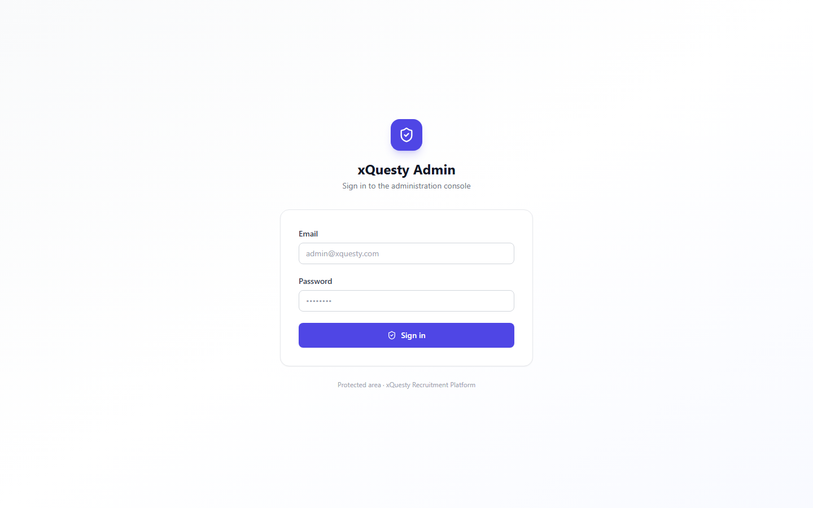
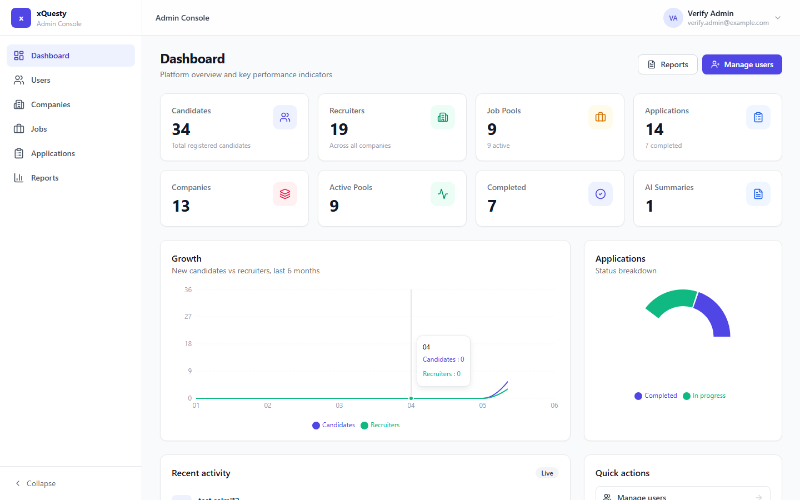
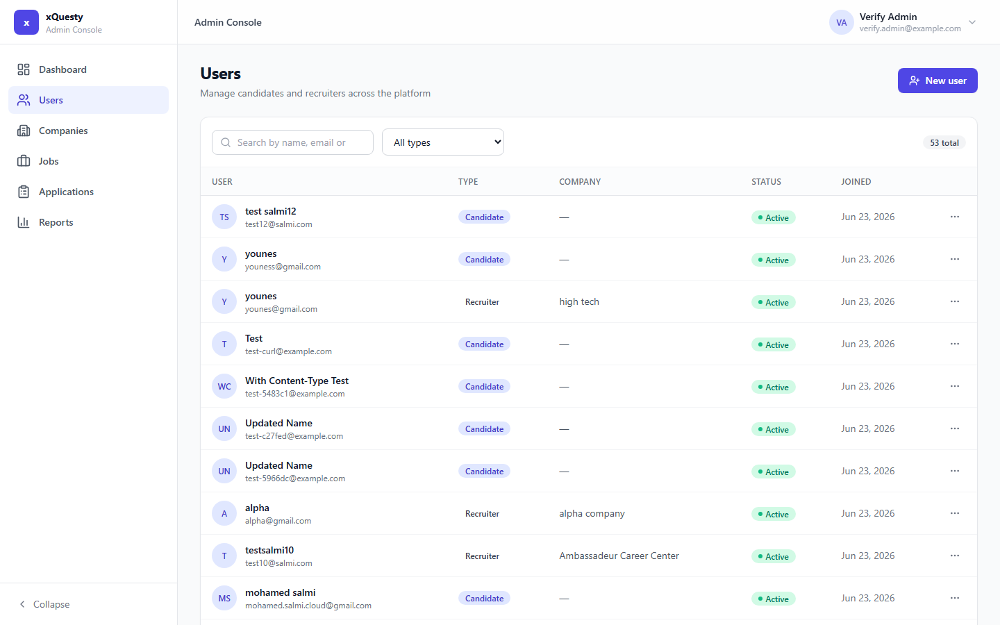
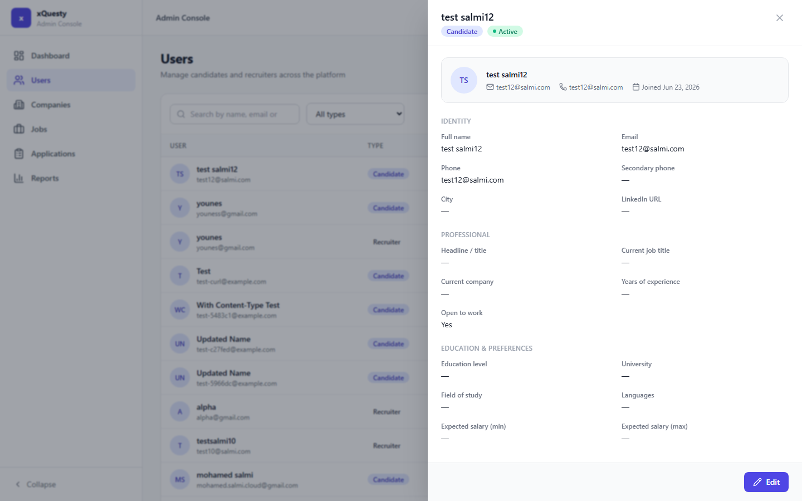
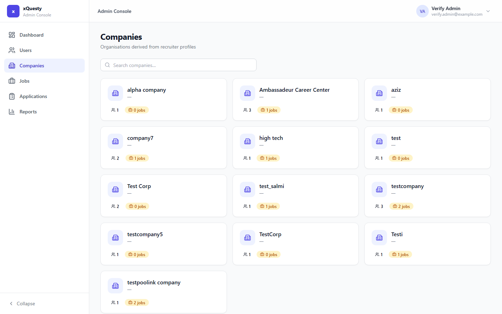
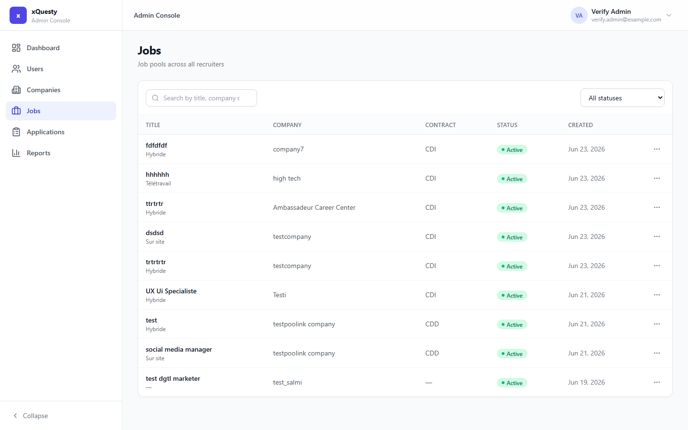
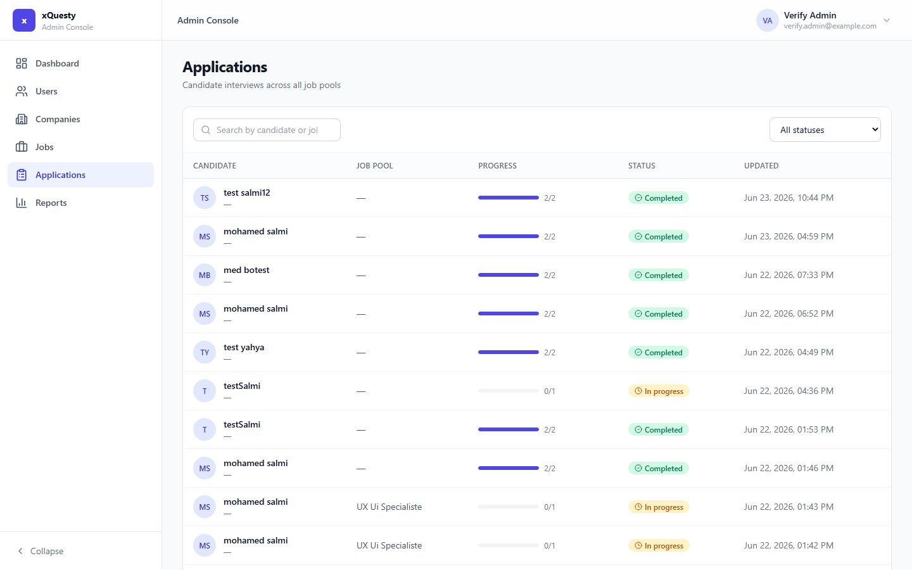
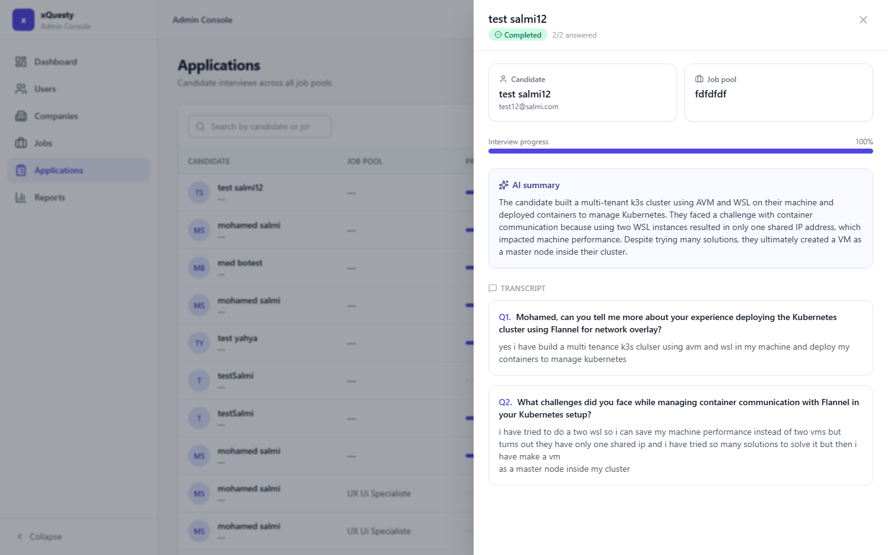
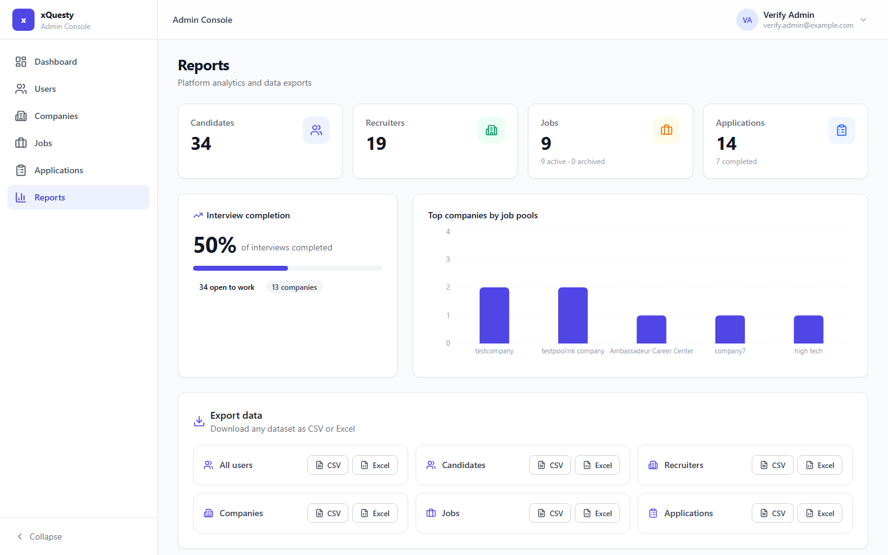
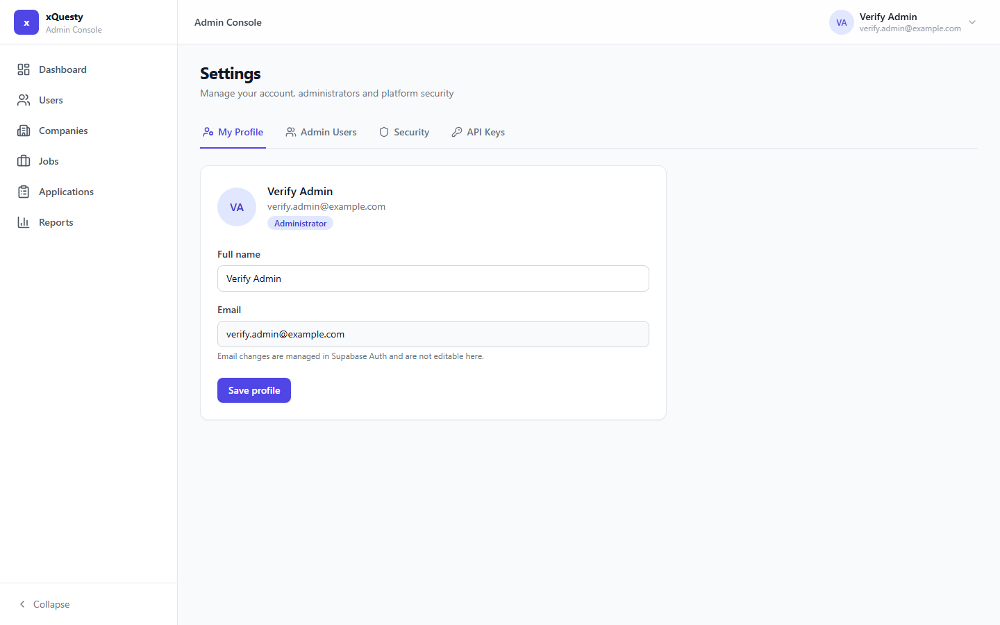
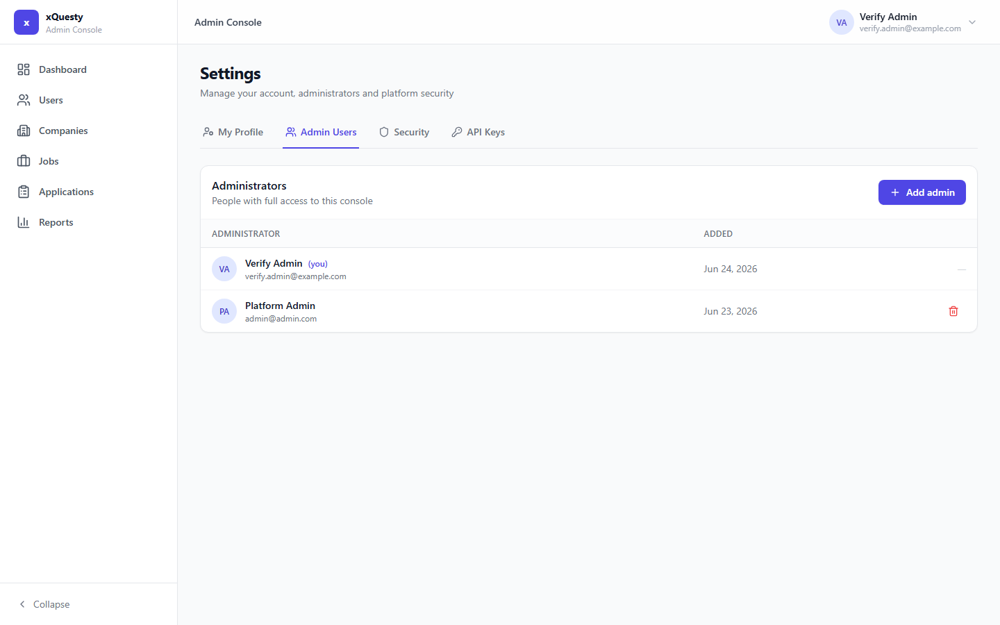
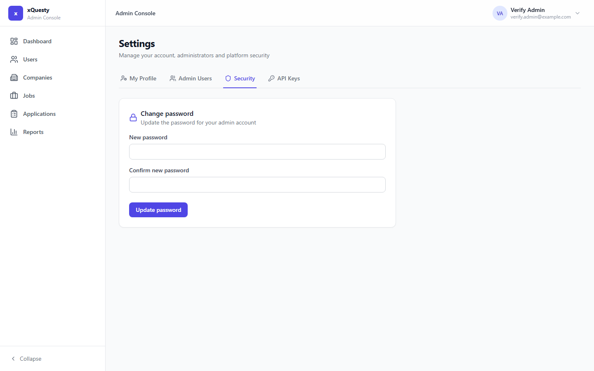
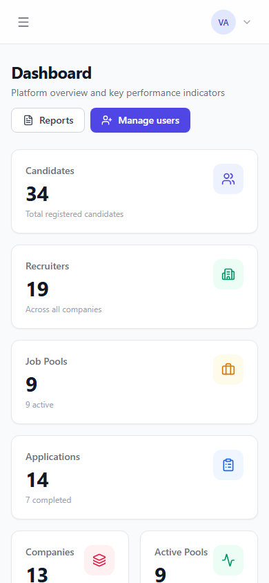
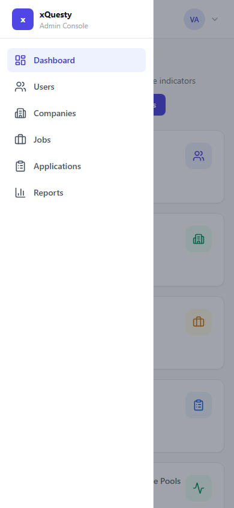